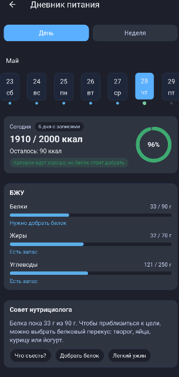
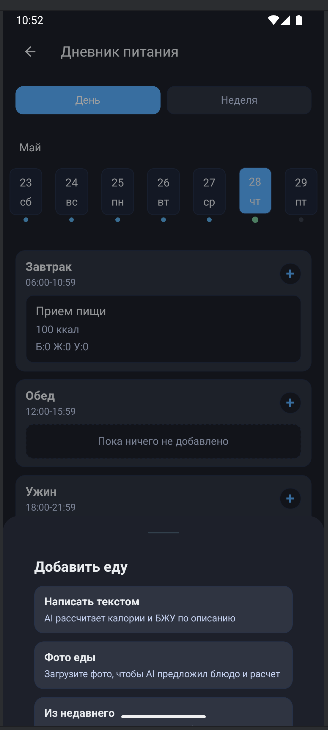
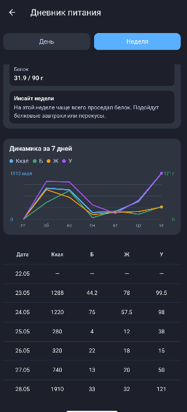
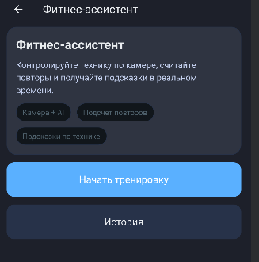
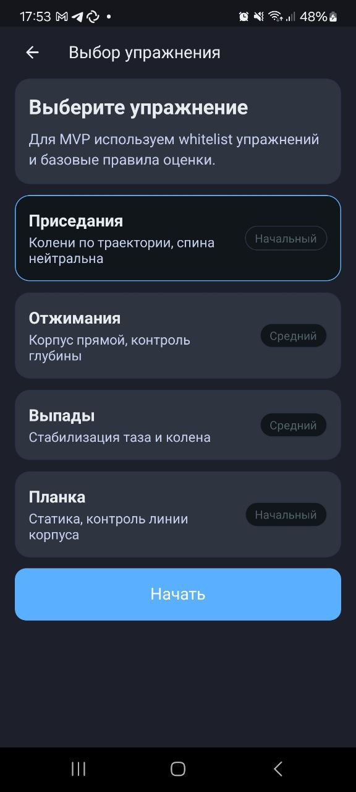
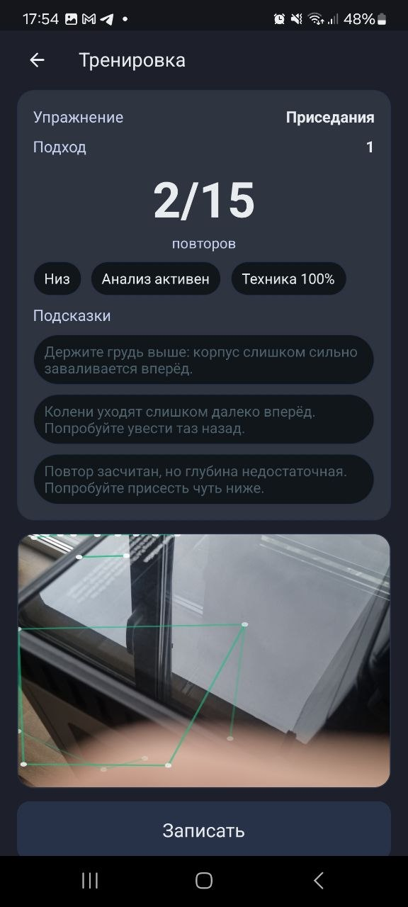

Ежедневные сценарии: питание, тренировки, AI-рекомендации.
Wellness-сервисы
Ценность не в таблице показателей, а в персональных подсказках и выводах для пользователя.
Опираемся на существующие AI-сценарии и базовые механики; при интересе пользователей разделы можно развивать как часть подписки, пакета услуг или персональных рекомендаций.
Дневник питания
Основан на существующем AI-ассистенте нутрициологе и помогает пользователю получать рекомендации по рациону.
Что умеет
- фиксация приемов пищи;
- анализ рациона;
- рекомендации от ассистента нутрициолога.
- подбор подсказок, продуктов или дополнительных материалов.
Ключевая ценность
- AI-компаньон по питанию вместо простой таблицы калорий.
- Пользователь видит, чего не хватает в рационе и как его скорректировать.
- Раздел можно развивать через цели, регулярность и легкую геймификацию.
Что важно учесть
- Распознавание еды по фото может быть дорогим при анализе через AI.
- Можно подключить открытую бесплатную базу продуктов.
- КБЖУ и состав подтягиваются из справочника, снижая нагрузку на AI-ассистента.
Персонализация
- При согласии пользователя можно учитывать цели, привычки и предпочтения.
- Частые запросы помогают делать рекомендации точнее.
Скриншоты раздела



Фитнес-ассистент
Помогает анализировать выполнение упражнений и давать пользователю обратную связь по технике.
Что умеет
- анализ выполнения упражнений;
- базовая оценка техники;
- помощь при выполнении упражнений.
Ключевая ценность
- Базовый контроль техники дома без найма персонального тренера.
- Ассистент подсвечивает ошибки и помогает тренироваться безопаснее.
Особенности реализации
- Распознавание движений может выполняться на устройстве клиента.
- Видео не нужно отправлять на сервер.
- Ниже нагрузка на инфраструктуру и проще соблюдать требования к персональным данным, в том числе 152-ФЗ.
Что важно учесть
- Каждое упражнение требует отдельного тестирования.
- Нужна настройка камеры и проверка качества распознавания движений.
- Сценарии обработки ошибок могут увеличить срок реализации.
Скриншоты раздела


